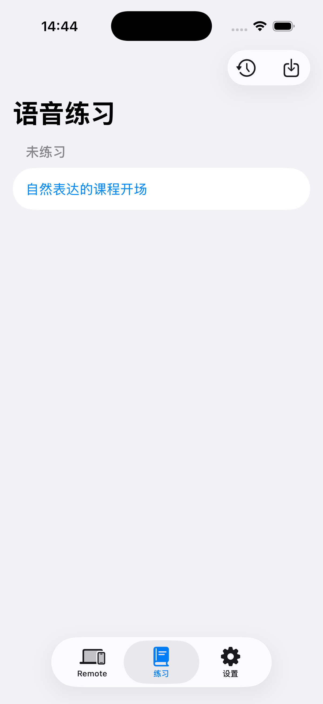

01 · Mac 讲稿预览与系统朗读
先把讲稿听进耳朵，提前发现拗口句子。
在 Mac 上打开受支持的 Markdown 或纯文本讲稿，先用系统声音按可调语速朗读一遍，检查口播与课程开场的停顿呼吸，再进入实拍提词。

视频创作三阶段工作流
将 Mac 悬浮提词窗贴近摄像头，配合语音跟随、iPhone 试讲、只读转录对照，以及 iPhone 与 Apple Watch 镜头外无声调整段落，搭配相机、OBS 或常用录屏软件实拍。内置 Mac 屏幕人像录制与讲稿素材归档是计划加入的能力。
阶段一 · 拍前备稿与试讲
很多NG来自书面长句上镜才发现拗口。先听语感、试讲一遍、对照转录复盘，正式开录就能少拍重来。
01 · Mac 讲稿预览与系统朗读
在 Mac 上打开受支持的 Markdown 或纯文本讲稿，先用系统声音按可调语速朗读一遍，检查口播与课程开场的停顿呼吸，再进入实拍提词。
02 · iPhone 语音练习
不在电脑桌前时，也能在 iPhone 练习库中打开讲稿完成离线语音练习，熟悉段落衔接与重点重音，为正式拍摄建立自信。

03 · 讲稿与只读转录并排对照
切换到对照视图，左侧保留原讲稿，右侧按段落同步展示只读语音转录并高亮匹配词句，方便复盘下一条 Take，且绝不会擅自改写你的原稿。

阶段二 · 实拍眼神与镜头外遥控
搭配相机、iPhone 连续互通相机、OBS 或其他录屏工具时，不再追着滚屏跑，也不用伸手摸鼠标破坏画面。
04 · Mac 贴镜头浮动提词与 Voice Follow
将浮动提词窗口拖到屏幕顶部摄像头正下方，按照自然语速对镜表达：语音识别推进当前句，停顿思考时耐心等待，说出重录口令即可回到上一句重拍。

05 · iPhone Remote 扫码盲操
用 iPhone 扫描 Mac 二维码即可连接 Remote，实时镜像当前讲稿位置。实拍中多聊了两句案例需要跳段时，手指轻点即可切回目标段落，无需低头移动鼠标。

06 · Apple Watch 免费配套控制
Apple Watch 是免费的配套控制端，无需单独付费。不方便拿起手机时，旋动数码表冠或轻点上一段、下一段，就能自然衔接下一段表达。

阶段三 · 内置 Mac 录制预置、讲稿归档与标准化导出
屏幕录制往往既要准备稿件，又要反复设定采集范围，还要核对导出规格。稿随将自然提词、可保存的录制模板预置、按讲稿自动归档与支持直出合成或拆分多层素材的导出预置接入同一桌面（随 Ultra 版本即将发布，上线时间以 App Store 页面为准）。
07 · 多模式录制模板、保存预置与提词联动
提供全屏、单窗口、选定区域，以及仅音频、仅摄像头多种录制模板；支持将采集范围、系统声音、麦克风（可选 48 kHz / 24-bit Apple Lossless）与人像画中画布局保存为预置，一键加载随时进入录制状态。倒计时归零同步启动采集与自然提词，录制中暂停自动剔除停顿片段，录完即存独立本地 Take 随时连拍下一遍。

08 · 按讲稿自动归档、成片导入与标准化导出预置
关联讲稿录制的视频会自动归入同名讲稿文件夹，支持导入外部剪辑好的生产视频（标注“导入”徽章）同夹加星标、写备注并按全部 / 收藏 / 导入筛选（移除导入项绝不删除外部原文件）。内置网页与设备兼容、小文件、ProRes 高画质、主体抠像等导出模板并支持保存自定义导出预置：既可非破坏性调节人像画中画与鼠标点击高亮后直接合成单一成片，也可一键拆成屏幕、人像、音轨与同步 .srt 字幕的多层素材包。